Major Elements
Created Tuesday 06 October 2020
@GEOLOGY @PETROLOGY @YEAR2
@major_elements @minor_elements @trace_elements
| Element Type | Wt% | Measured in | Analysis |
|---|---|---|---|
| Major elements | >1 | Wt% | XRF & ICP-AES |
| Minor elements | 0.1-1 | Wt% | ICP-MS |
| Trace elements | <0.1 | ppm |
Quantities of elements are measured as wt% of oxides
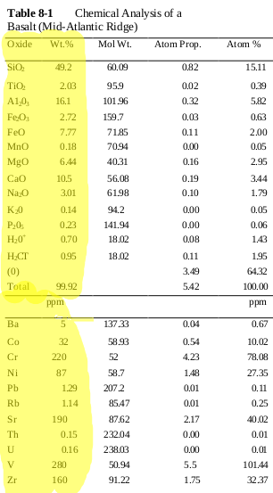
Analysis:
- @XRF = x-ray floresence üéûÔ∏èhttps://youtu.be/cAKcOyrt5Vc
- @ICP_MS = Inductively coupled plasma mass spectrometry
- @ICP_AES = Inductively coupled plasma atomic emission spectroscopy
- Ratio of stable to unstable @isotopes
- Presence of volatile elements and noble gases
- @Loss_on_ignition (sample is heated >1000° and the mass difference is measured to find out how many volatiles have evaporated away)
Normative vs Modal Minerology
- @Normative_minerology ≠ @modal_minerology
- Modal = measuring the raw vol % of minerals in the rock
- Normative = Theoretical and idealised mineral content calculated from the major minerals using known values. Calculate the elements → calculate the minerals. It is calibrated from the @CIPW_Norm
Systematic Variation
⬇️Notice how some oxides vary systematically from basalt to rhyolite but only @Silicon increases. @Aluminium does its own thing entirely.
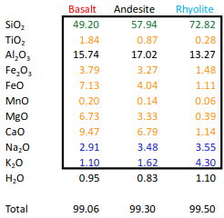
What can cause these changes?
@Fractional_crystalisation
See Magma Differentiation
Harker Diagrams
@Harker_diagrams show systematic variation⬇️
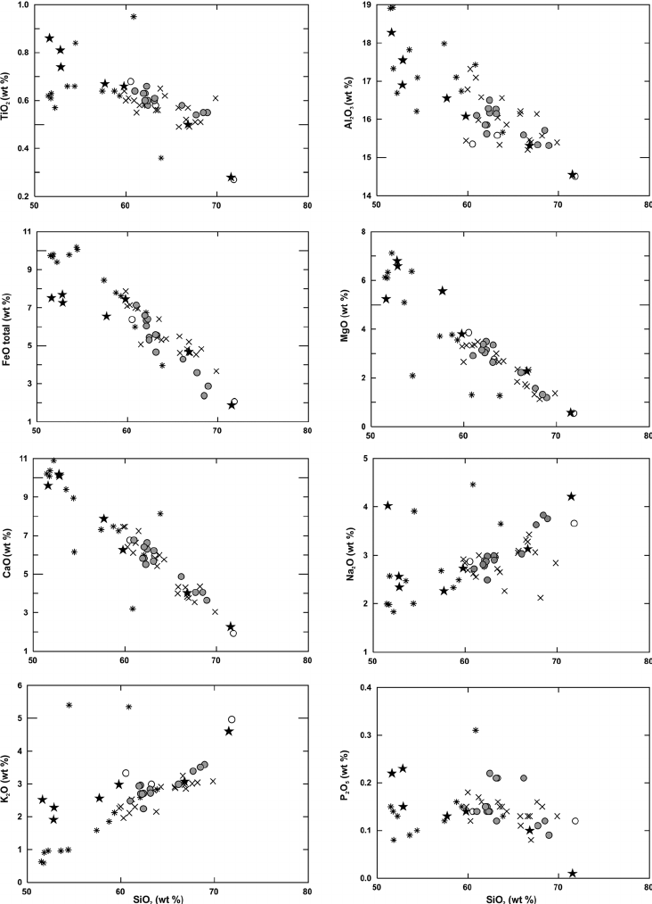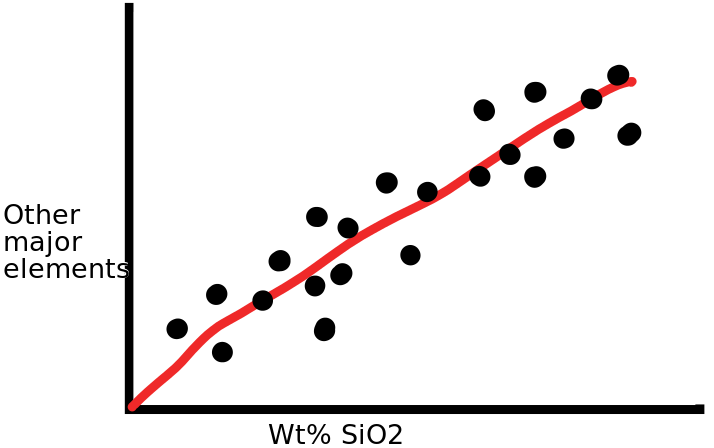
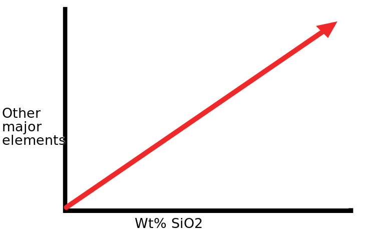 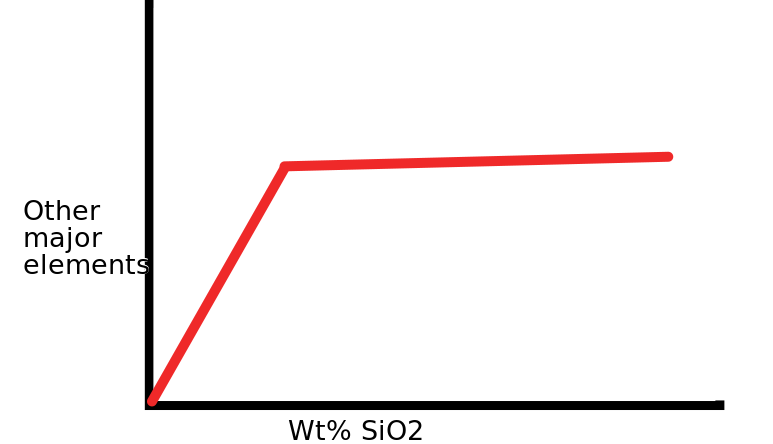
Increase⬆️ Inflection⬆️
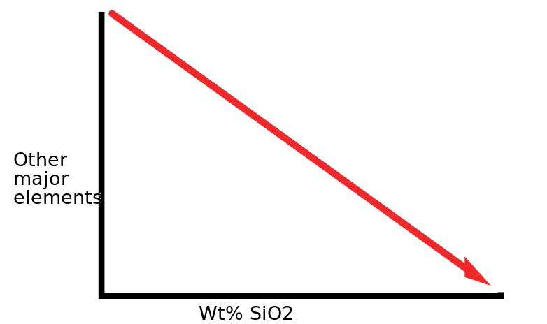 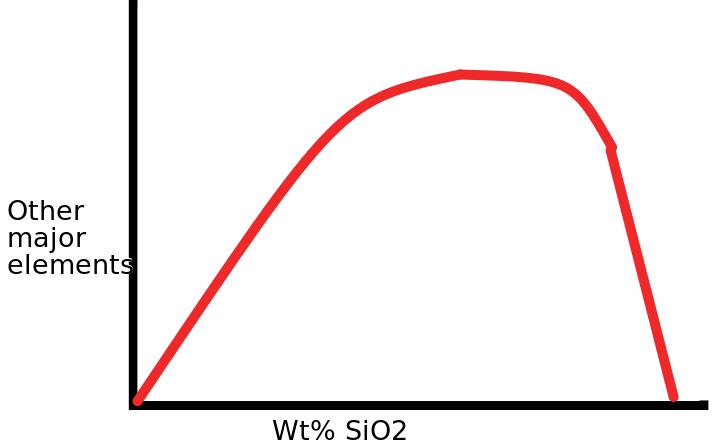
Decrease⬆️ Peaked Trend⬆️
Total Alkali Silica Diagrams
Alternative graphs include @Total_Alkali_Silica_Diagrams
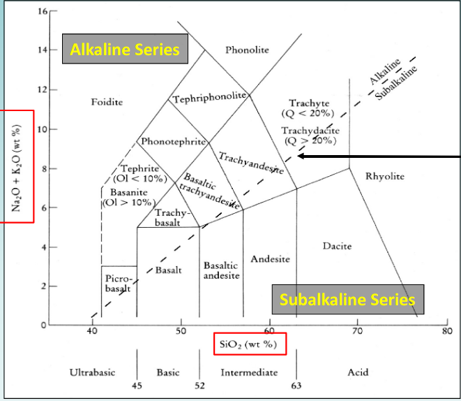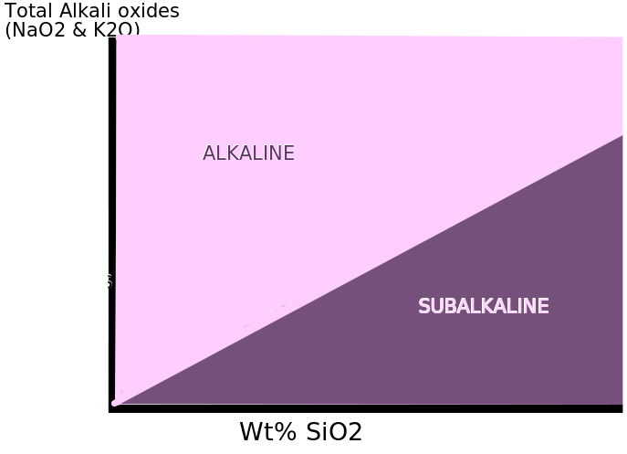
The subalkaline can be further subdivided with an @AFM_Diagram ⬇️
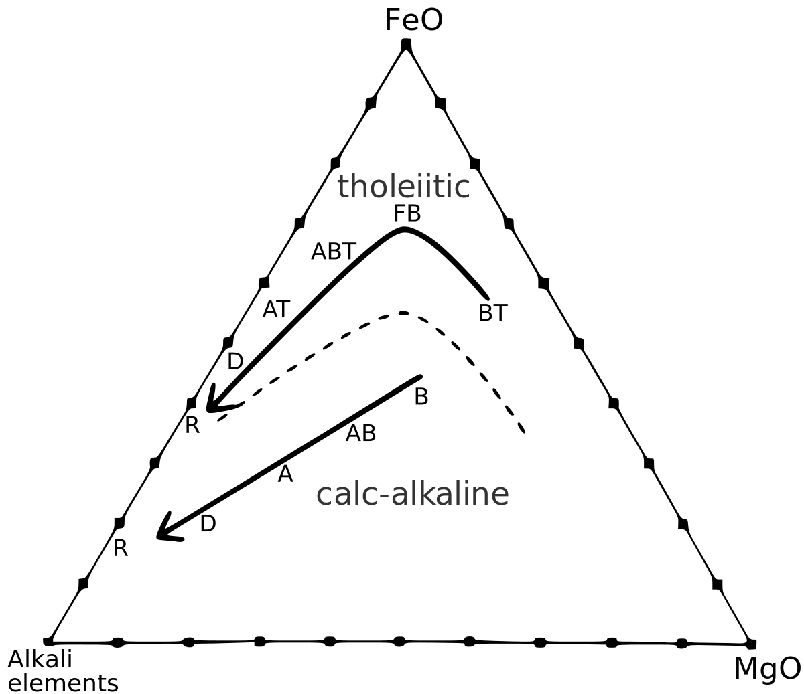
The @Theolitic path shows the evolution from a basalt to ferrous to an alkali
The @calc_alkaline path is a straight line from a rhyolite to alkali